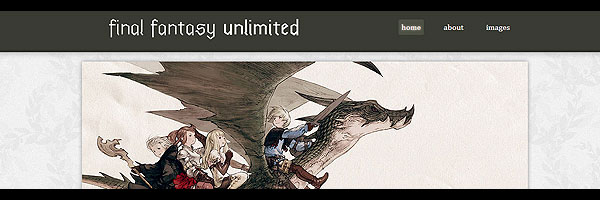

Work Examples
Page design made for a Final Fantasy Fansite concept.

Portfolio/Project-oriented design.
Portfolio site design ~ IN PROGRESS.
I'm a student currently attending Florida Atlantic University in Boca Raton, where I am majoring in Computer Science and English. As you can see, this site is under construction.
I started by doing simple PhotoShoppin' when I was 14. I spent too much time on video game forum sites and I wanted to have neat banners with my name on them. They had to look exactly how I wanted, so, obviously, I couldn't let anyone else do it for me. Those banners, signatures, and avatars I made back then really were something awful.
Delving into an internet culture composed of teenagers (mostly from the U.K., for some reason) sharing computer graphics with each other, and competing in "Designs Of The Week"'s eventually led me to web-programming -- and then, just programming.
Naturally, I started my own now-defunct forum site with InvisionFree where I tried to attract as many users as possible so that we could talk about video games, web graphics, and not do anything productive. I had fun doing all designing for that site, but obviously, it was still all quite bad, and the site ran as well as a pre-teen in Middle School could do.
I'd like to think my taste in design has matured, but perhaps I'm not the best judge; anyway, I'm more a programmer than a designer. Calling myself either feels pretentious. But I'd like to share things I can say I made. Maybe you'll like them.
kevin
Page design made for a Final Fantasy Fansite concept.
Portfolio/Project-oriented design.
Portfolio site design ~ IN PROGRESS.